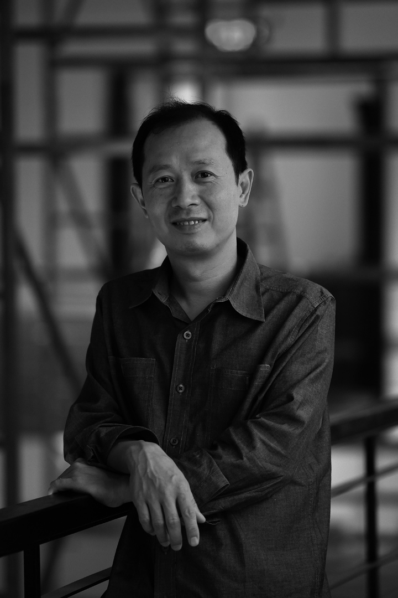

与没有商量余地者的谈判
候瀚如
作为全球化的先锋，今天的艺术从本质上讲关联甚至取决于权力系统，并反过来被体制及或市场的成功盖棺定论。而同时当代艺术正日益演变为某种风雅人士的娱乐消遣，潜身名利之所。它受到人们空前的欢迎，成为无数媒体和市井流言的焦点，披着艺术创造、艺术革新甚至艺术挑衅的外衣招摇过市。
另一方面，照经济全球化的逻辑，当代艺术体制及市场的成功主要涉及那些非西方的国家——中国，印度，土耳其，俄罗斯甚至伊斯兰国土；没有提及的拉丁美洲和非洲如今也成为体制拓展的全新前沿，新一代“核心”正在这些地方逐步确立。在他们之中，中国艺术家无疑是最受人们逐猎的一群。而颜磊则成为过去十年中国土壤繁衍出的新一代艺术明星之一。
的确，艺术与权力的问题——特别是中西方权力的问题，一直是几代中国艺术家在他们的作品、话语和社会行为中不断交涉和探讨的核心问题。然而有意思的是观察颜磊这一代艺术家的作为：他们于90年代末崭露头角，在最近十年内大获成功；上一代艺术家在先锋式的反叛以及后殖民主义者争论的潮流中向西方中心价值和话语霸权挑战，寻取其独有的、中间人式的文化身份——而颜磊他们则将自己与那代艺术家区分开来。他这一代艺术家寻求新的策略，以某种犬儒加嘲讽的姿态，直接渗入、拥抱和亲身参与到拥有绝对话语权的全球系统中，与之交涉谈判，而并不放弃成为颠覆分子的可能。他们是实用主义者和机会主义者。但同时人们必须承认这一过程中包含的临界性和反叛…它最终显现出的是今日艺术语境中持续发生的对艺术活动的再定义。
之前成长于上世纪80年代中国首次开放语境中的艺术家，经历了“85新潮”运动，他们对这一问题有着更为共同、抽象和激情的理解和解决方法。很显然他们是用质疑的态度公然藐视官方意识形态和体制压迫的霸权。他们在1989年之后的经历——这一年因北京举办的“中国现代艺术展”、天安门事件、柏林墙的倒塌和蓬皮杜文化中心举办的“大地魔术师”展览等而载入历史——再加上其西方世界中的移民者身份，更将他们推到“后殖民”时代的生存者位置，奋力宣示自身获取的新式身份；这一切呈示了一场介于“中国性”（作为记忆和想象的混合体）和西方后殖民社会中中国艺术家角色之间的谈判。黄永砯、陈箴、谷文达、蔡国强、徐冰等人是其中范例。在他们的思想和作品背后总能发现某种浪漫甚至乌托邦式的、对普遍性和不断进步的诉求；这就让他们的先锋精神延展至一种新国际主义者语境中，使得他们奏响了在基于多元文化幻想下的新全球社会的制作过程中尤其引人瞩目的第一重音。
对90年代的新生代艺术家来说，他们正赶上中国理所当然地直接进入到全球化的现实之中，成为全球化人士是一种更为真实、自然和私密的经验。他们在自己的祖国中生活，又生活在全球化的生活之中，与新型的消费和通讯社会合为一体。这是一种日常生活经验。在艺术世界里，艺术在全球市场中不断增长的权力蔚为壮观，当代艺术作为娱乐工业的繁荣无比耀目（伴随各种大事件、体制机构和媒体的爆发）。随着日益增多的对不同文化符号和词语的“全球式”的覆盖，全球艺术也意味着某种漫无边际的、具有代表性的、拥有市场权力的霸权体制。今日中国艺术家的生存和创作必然要更多地直接与“全球艺术世界”打交道，特别是应酬那些 “新殖民主义”式的、游历丰富的富贵阶层的拜访（收藏家、商人、策展人、记者等等）和他们的“新异域”理解观；他们要采取更为实用主义的方法和策略，甚至像做生意般，骨子里带着玩世不恭，这样才能让自己生存和获取利益。颜磊的艺术带着对这场权力游戏的尖锐批判明示着一种全新的驳斥立场，也展现了游刃其中的智慧……
在这样的语境中，当今艺术家几乎无法摆脱成为主导的“全球”权力体制下窥淫对象的命运。《May I See Your Work》是第一个——或许也是最明显的一个——对这一状况进行揭示的作品。它创作于90年代中期，从那时起国际收藏家、商人和策展人开始了他们在中国当代艺术舞台上的探险。当时的艺术家仍然以某种地下的方式生存和运作艺术。让外国人知道自己的作品可以在某种方式下让他们得到资金继续创作、展览甚至售卖作品。他们的代价是或多或少地成为来访者窥淫的猎物。许多艺术家不得不特意为“国际”艺术世界制作作品，以供其系统地将艺术家的政治或文化的异域风情规划到“非西方”的、尤其所谓“中国的”蓝图之上。此所谓风靡一时的“政治波普”或“玩世现实主义”。恰恰这个时候，颜磊创作了这件谦朴的、几乎没有内容的观念作品：他复制了一副拉脱维亚工程师、间谍照相机的发明者（与其同事一起）Walter Zapp的照片。颜磊用这个发明的故事做题材倒不是要向发明者致敬，毋宁说是对这项发明的命运给出了嘲讽的提醒：它使得国际间谍活动更为便利并因此给权力游戏带来益处，促成了超级权力的统治。艺术（今天在中国以及其他权力中心之外的地方）会陷入同样命运之中吗？
上世纪90年代，中国当代艺术被快速地接纳和吸入进诸如威尼斯双年展、巴塞尔博览会等主流的国际艺术活动中。而卡塞尔文献展因其神话般、某种程度上负载过重的声誉占据了很多艺术家内心天平中有关事业成功的主要位置。从体制权力来看，卡塞尔文献展确实是西方霸权中最重要的符号，总能激起艺术家最大的期望以及经常性的沮丧。那么颜磊对卡塞尔话题的想象和批判反应也就不足为奇：他在这十多年中创作了一系列对之进行尖锐讽喻的作品。1997年，他与洪浩一起伪造了大量卡塞尔文献展的邀请信，发寄给那些不放过任何参加文献展机会的中国艺术家们。这在艺术世界中一石激起千层浪，引来愤怒无数。五年后，用一种机械但包含歧义现实主义的方法，他复制画出了一副照片，一群国际策展人由卡塞尔文献展策展人带队来到中国，一起附和着说：“我能看看你的作品吗？”2007年，在受邀参加了第12届文献展之后，他推出了一组新画 “追光系列”（Sparkling series），将于他在阿斯彭(Aspen，美国科罗拉多州)的展览上展出。这组画中，他仍以一贯的模棱两可和讽刺回顾了自己与文献展充满矛盾的关系：画面背景中一起出现的是洪浩、安迪•沃霍尔、文献展当今的策展人和他自己的肖像，散发着典型的毛泽东头像在文革时代神一般照耀的光芒，再饰以他从中国到卡塞尔再到阿斯彭一路走来的画面。这些旅程中的画面安排像是一种他对自己与文献展焦虑而矛盾的关系、以及由此引发的与“全球艺术体制”关系的自传式忏悔。混合着激动与冷淡的情感再一次展现了其基本的进退维谷的精神状态。这是颜磊的个人情感；而这更多地揭示了一种普遍情绪，或者说一种集体无意识，它存在于今天众多中国和非西方艺术家之中，他们茫然面对融入建立起的“全球艺术体制”中的必然过程而无保留其他选择与独立性的可能。最终，人们不得不面对那无法解决的有关真理、价值和权力问题。
有意思的是，正是这一站不住脚的位置使得颜磊（以及和他同类的艺术家们）继续与那没有商量余地的谈判下去，继续寻找中心内部的边缘，继续将同一之见化为先锋思维。当然，嘲讽、自嘲、讥刺和反叛会与盲从和犬儒混在一起，这也使得他的艺术尤其显得不确定、有煽动性、令人困惑和不理解。颜磊没有惧怕这种不理解，而是将之作为一种彻底的自由状态加以维持，以此使得模棱两可和困惑转化为驱使他艺术想象和表达的力量。他已经从利用现成之物的策略中得到了灵感，尝试了将之扩展到与当代“全球艺术体制”的权力谈判中。另外，他也经常地走出来，迈进真正的政治与经济之中。颜磊称自己的艺术为“U.A.P”——终极艺术项目，他将发现的图像、日常生活经验的痕迹捡起并加以利用，并神奇地将之转变为极度的神秘和吸引人，使得观者处于好奇与沮丧的无尽张力之中。安迪•沃霍尔用他的工厂生产一条龙推行波普艺术的极端策略，这在总体上来说明显影响了颜磊作品的发展和他对艺术的态度。去年，颜磊的个人作品系统地完结于观念化或者建立游戏规则的阶段；作品实际的生产和实现——如绘画和印刷等等——则总是由其他人完成。这一创作选择最终抹杀了作为艺术创作主要特征的艺术家主观性的浪漫地位，允许艺术家完全地投入到真实生活无息的变迁当中，而不必断称任何既定的价值和“真理”。或许正是这种终极的“自我解放”使得他在当今中国甚至国际艺术舞台上创作了一些最具挑衅性和幽默的作品：在“第五系统. 后规划时代的公共艺术”（第五届深圳艺术双年展，2003－2005年）中，他成功说服当地政府批给他一块位于深圳市最为奢华的街区中心内的一块足球场大小的场地，并将之白白圈了两年。这间接导致了巨大的经济损失，因为这个城市不得不与这个不知名的心脏地带一起度过了两年时间。2006年，效仿巴塞尔艺术博览会“艺术无限”版块形式，他在北京时髦的798艺术区的一家假画廊里为一个名叫张岳的根本不存在的艺术家策划了一次展览。这个事件引起了无数坊间热议和众多愤怒。他为第十届伊斯坦布尔双年展所作的项目可能是最为激进和富有影响的：他没有创作任何实际的作品，而是决定从北京带个礼物到伊斯坦布尔。这份“礼物”实际上是扎根北京的朋克乐队“脑浊”。颜磊与“唐人”画廊合作出资，邀请这四位乐手去了伊斯坦布尔，并让他们在开幕式上进行了演出。他们放肆和激烈的表演打破了所有文化禁忌甚至使得外交礼节暂时失效：唱最后一首歌的时候，在场的中国大使——通常这是最为循规蹈矩和谨慎的形象——变得无比激动并向他的随从人员小声说道：“这才叫当下的中国文化。我们应该让他们在北京奥运会开幕式上表演！”
候瀚如
2008年1月，旧金山
翻译：苏伟

侯瀚如
现任旧金山艺术学院（SFAI）展览及公共项目总监，展览研究和博物馆学系主任。1963年生于中国广州，毕业于北京中央美术学院，1985年获艺术学士学位，1988年获艺术硕士学位。作为艺术评论人、策展人，自1990年常驻巴黎，后自2006年常驻旧金山。作为一名艺术与文化评论人和策展人，在当今全球化时代与空间生产的全新模式、社会介入同多元文化对话的环境中，他长期关注艺术、建筑、城市规划与社会变革之间的动态关系。他同来自不同领域的多方专家与公众紧密合作，他的策展与写作项目均具有高度的实验性，并尝试提出对全球性与本土性之间，过去、现在与未来之间张力与互动的新理解，以为文化生产与对艺术实践的重新定义设想新前提。他曾荣获2008年法国文化部“艺术与文学骑士奖章”。